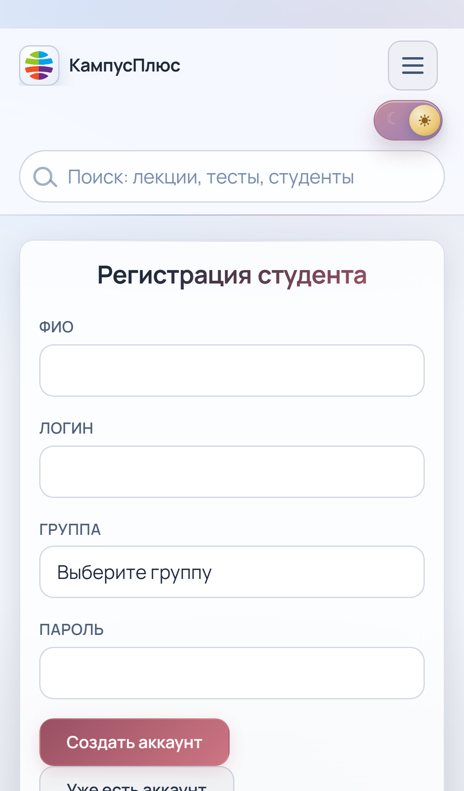

Преподаватель
Создает дисциплины, лекции и тесты, публикует тест через QR, смотрит аналитику по студентам и группам.
Презентация продукта для защиты диплома


 Главная страница
Главная страница
 Экран входа
Экран входа

Регистрация студентаЭто свежие скрины текущей версии проекта, снятые с мобильного потока.
 Панель преподавателя
Панель преподавателя
 Кабинет студента
Кабинет студента
 Прохождение тестов
Прохождение тестов
Админ нужен как операционный контур, но основной поток обучения идет через преподавателя и студента.